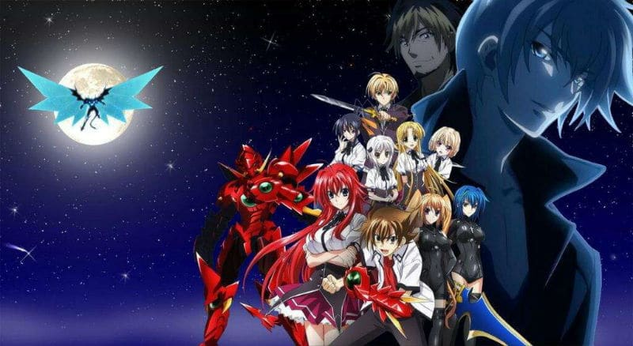
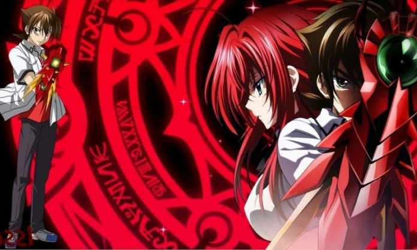

High School DxD is a Japanese light novel series written by Ichiei Ishibumi and illustrated by Miyama-Zero. The story centers on Issei Hyodo, a high school student from Kuoh Academy who desires to be a harem king and is killed by his first date, revealed to be a fallen angel(angels who are filled with negativity), but is later revived as a devil by Rias Gremory(daughter of great Devil king)to serve her and her devil family. Issei's deepening relationship with Rias proves dangerous to the angels, the fallen angels, and the devils.
Kuoh Academy is a former all-girls school that has recently turned co-ed, but it has a secret. Unknown to normal humans, angels, fallen angels and devils comprise part of the student population. One of these students, Issei Hyoudo, is a second-year human student who lives a peaceful life. After an ordinary school day, Issei is suddenly asked out on a date by a girl named Yuma Amano. After their date, Yuma brings Issei to a local park and makes a startling request that she wants him to die for her. She reveals herself as Raynare, a fallen angel, and she tries to kill him. Using her summoning card, Rias Gremory, a buxom third-year student at Kuoh Academy, revives him. Issei wakes up the next morning, thinking that the events that occurred were all just a dream. Immediately after being attacked by another fallen angel and waking up, he notices Rias naked in his room. Rias reveals to Issei her true identity as a devil and says that as a result of his death at the hands of Yuma she has reincarnated him as a devil, becoming her faithful servant in the process.
For the first volume, he made Rias a second lead character and heroine, and Asia to be the second heroine. Some of his characters are loosely referenced from the Bible, non-fiction books, and mythology. He created a world where the war between the three main factions (Angels, Devils, and Fallen Angels) is over, and where many famous angels and devils have already ceased to exist. He also added characters and legendary beasts from a variety of places from Norse mythology to Japanese Yokai. The concept of Balance Breaker was to represent a super-powered version of the character's Boosted Gear.
